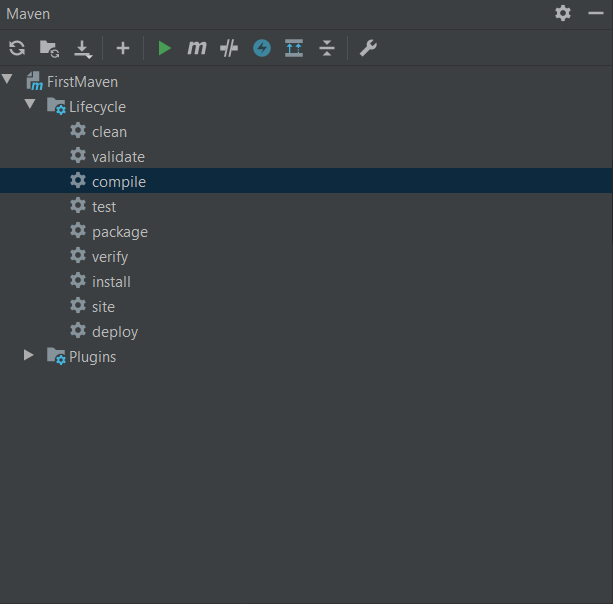

1. gyakorlat¶
XML (eXtensible Markup Language)¶
Az XML-t adatok tárolására és továbbítására tervezték. Mind ember és mind gép számára olvasható formátumban tárolja az adatot (azaz, szöveges formátumban és nem binárisan). Az XML szoftver- és hardverfüggetlen eszköz, így például előszeretettel alkalmazták/alkalmazzák web szolgáltatásokban adatok továbbítására. Önmagában nem csinál semmit, nincsenek előre definiált tagek.
Egy egyszerű XML példa:
1 2 3 4 5 6 7 | |
Az XML-t sokszor használják arra, hogy az adatot elszeparálják a megjelenítéstől, továbbá előszeretettel alkalmazzák konfigurációs állományokként (pl.: build.xml Ant esetében, illetve pom.xml Maven esetében, stb).
Ilyen értelemben egyenértékű lehet a JSON-nel is, melyben szintén adatokat adhatunk meg.
XML fa¶
- Az XML dokumentumok elemei egy fa struktúrát alkotnak, melyet szokás XML DOM-nak is hívni (HTML DOM mintájára).
- Minden XML dokumentumban pontosan egy gyökér található.
- Minden pontnak lehetnek gyerekei is.
- A fenti példában
<note>a gyökér, melynek négy gyereke van (to,from,headingésbody)
Az XML-ek első sorában az úgynevezett prolog sor található, mely speciális formátumú és opcionális. A lenti példában a használt XML verzióját (kezdetektől fogva 1.0) és a karakterkódolást adja meg (az alapértelmezett az UTF-8).
1 | |
A prolog sor nem része az XML dokumentumnak, ezért nincs szükség lezáró tagre.
Egy XML dokumentum jól formázott, ha teljesülnek a következők:
- Nincs átlapoló tag-pár (Például nincs ilyen:
<to> <from> </to> </from>) - Minden tagnek van lezáró párja
- Minden attribútum érték idézőjelek vagy aposztrófok között szerepel
- Pontosan egy gyökér elem található a dokumentumban
Karakter entitások¶
Mivel az XML-ben vannak speciális karakterek, ezeket valahogy máshogy kell írnunk, ha egy ilyen karaktert szeretnénk adatként tárolni. Ezek a karakter entitások:
| Karakter entitás | Megjelenés | Elnevezés |
|---|---|---|
| < | < | kisebb mint |
| > | > | nagyobb mint |
| & | & | és jel |
| ' | ' | aposztróf |
| " | " | idézőjel |
Például azt szeretnénk írni a <heading> tag-ek közé, hogy x < y, akkor azt a következőképpen tehetjük meg:
1 | |
Elemek¶
Minden XML elem a következőket tartalmazhatja:
- szöveg (Pl:
<to>szöveg</to>) - attribútum (Pl:
<note id="attr"> </note>) - további elemek, azaz gyerek elemek (Pl: a
notetartalmazza ato,from,heading,bodytageket) - a fentiek kombinációja (egy elemnek lehet egyszerre attribútuma, lehet benne szöveg, illetve a szöveg mellett további elemeket is tartalmazhat)
Az alábbi példában láthatunk egy olyan esetet, amikor egy elem kombinálva tartalmazza az összes lehetőséget:
1 2 3 4 5 6 | |
Az XML tagek lehetnek üresek is, azaz nincs bennük se szöveg, se másik elem:
1 | |
Ezt rövidebben is írhatjuk, az alábbi formában, melyet self-closing tag-nek nevezünk:
1 | |
Gyerek elem vagy attribútum¶
1 2 3 | |
A fenti XML részlet ekvivalens a következő kóddal:
1 | |
Látható, hogy teljesen mindegy, melyik módot választjuk, mivel maga az adat így vagy úgy, de meg lesz adva.
Akkor mégis mikor melyiket használjuk?
Alapgondolat: Az elemre vonatkozó meta-adatokat tároljuk attribútumokban a többit pedig gyermek elemként hozzuk létre.
Tehát a to legyen inkább gyermek elem.
Ha a note-ra vonatkozó meta-adatunk van (Pl: id), akkor azt tároljuk attribútumként.
Amikor valamilyen összetett adatról van szó (Pl. a to adaton belül tárolunk egy name, illetve email adatot), akkor nyilvánvalóan gyerek elemet használjunk!
Névterek (namespaces)¶
Az XML névterek alapvető funkciója, hogy a névütközéseket elkerüljük. Ez akkor fordulhat elő, ha különböző XML-eket (különböző domain) akarunk egyesíteni. Például egy HTML table-t használó részlet:
1 2 3 4 5 6 | |
Egy másik dokumentumban viszont a table egy bútordarabra vonatkozik:
1 2 3 4 5 | |
Ha ezt a két dokumentumot összefésülnénk, akkor névütközés lépne fel, mivel mindkettő dokumentumban van table, azonban teljesen más a jelentésük (ráadásul más elemeket is tartalmaznak).
1 2 3 4 5 6 7 8 9 10 11 12 | |
A fenti példa még nem teljes, mivel névtereket már használunk benne, de még nem definiáltuk a "h" és "f" névtereket.
A névtereket bármelyik elem xmlns attribútumában definiálhatjuk.
A névterek definiálásának szintaxisa:
1 | |
A fenti példa helyesen a névtér definíciókkal kiegészítve így néz ki:
1 2 3 4 5 6 7 8 9 10 11 12 13 14 | |
A névtér definícióját az összes gyermek elem örököli, azaz minden gyereknél használhatjuk a definiált namespace prefix-et. A névtereket a root elemnél is definiálhatjuk, majd a gyerekelemek között bárhol használhatjuk:
1 2 3 | |
A névtereknél a az URI-nak nem kell létezőnek lennie, csak az egyediséget hivatott biztosítani. A vállalatok azonban arra szokták használni, hogy a névteret leíró oldalra mutassanak. Megadhatunk alapértelmezett névteret (default namespace) is, melynek formája:
1 | |
Ilyenkor az összes gyerek elem ugyanabba a namespace-be fog tartozni. Vegyük észre, hogy ebben az esetben a prefix megadását elhagyjuk! A fenti példa default névterekkel:
1 2 3 4 5 6 7 8 9 10 11 12 13 14 | |
Mivel prefixet sem használunk a névtér megadásánál, így a gyerek elemekben sem kell hogy megadjuk azokat, mivel automatikusan a fában fölfelé elindulva a legelső megtalált névtérbe fognak tartozni.
Feladat (01_users)
Készítsünk egy XML dokumentumot manuálisan! A dokumentumban felépítése legyen a következő:
- A győkérelem legyen a
users -
A
userselemen belül legyen 3userelem, ahol mindenusera következő tulajdonságokkal rendelkezik:idnameemailage
Az összes user teetszőleges adatot tartalmazhat.
Megoldás
1 2 3 4 5 6 7 8 9 10 11 12 13 14 15 16 17 18 | |
Az XML alapjait a következő videó foglalja össze:

Build rendszerek¶
Általánosságában a build rendszerek segítenek, hogy a fejlesztési folyamat sokkal könnyebben és gördülékenyebben mehessen végbe. De mit is nevezünk pontosan build folyamatnak? Általánosságában véve mondhatjuk azt, hogy a build folyamat során a forráskódból valamilyen futtatható terméket kapunk. A fordítás mellett támogatást ad függőségek (3rd-party libek) kezelésére, egyéb jar-ok classpath-ba rakására, tesztek futtatására, a lefordított kódot csomagba rakhatjuk (JAR, WAR, vagy ZIP). Az elkészült csomagokat aztán publikálni is lehet egy alkalmazásszerverre vagy egy repository-ba. Ebben is segítenek a build rendszerek, mint amilyen a Maven is, mely képes ezeket a lépéseket automatizálni, így a kézi buildelés során esetlegesen bekövetkező hibák számát is lecsökkenthetjük.
Maven¶
A Maven egy build keretrendszer a sok közül, mely Java nyelvű alkalmazások build-eléséhez ad segítséget.
Azon felül, hogy a buildelés automatizálható a segítségével, bizonyos mintákat (best practices) is előnyben részesít, mely alapján segíti a projekt felépítésének könnyebb érthetőségét, így a produktivitást is növelve.
Egy ilyen best practice például a forráskódok helye, ami alapból a projekt gyökérkönyvtára alatt az src mappában található.
Amennyiben ezt a best practice-t követjük, akkor a build leíróban, mely a pom.xml lesz, nem is kell megadnunk azt, hogy hol találhatóak a forráskód fájljaink.
A Maven a következő feladatok elvégzésében segédkezik, azaz automatizálja azokat:
- Build (kódgenerálás, fordítás, package-elés)
- Dokumentáció generálása (pl.: Javadoc)
- Reporting
- Függőségek kezelése
- SCM (Source Code Management)
- Release
- Distribution
Az automatizálás előnye, hogy kisebb a hibalehetőség (nincs emberi tényező), illetve gyorsabb is maga a folyamat.
Maven fő képességei:¶
- egyszerű projekt létrehozás, mely követi a best practice-t. A maven projekt template-eket kínál, amiket archetype-nak nevez.
- függőségkezelés: automatikusan frissíti, letölti és validálja a függőségeket (library-k).
- központi repository: a projektünk függőségeit a lokális gépről vagy publikus repository-kból szerzi be a Maven (pl: Maven Central Repository)
Maven telepítése¶
Parancssori Maven-hez:
- Legyen JDK a gépre telepítve
- JAVA_HOME környezeti változót állítsd be
- PATH környezeti változóhoz add hozzá a $JAVA_HOME/bin bejegyzést (Win alatt %JAVA_HOME%\bin)
- Töltsd le a Maven-t (https://maven.apache.org/download.cgi)
- Csomagold ki valahova a tömörített állományokat
- ahova kicsomagoltad a maven-t add hozzá a PATH-hoz (bin könyvtárral együtt)
- nyiss egy terminált és futtasd az 'mvn --version' parancsot
Eclipse és IntelliJ is ad bundled Maven-t, azaz az IDE-ben beépítve, a parancssori telepítése nélkül is lesz már ilyenünk.
POM - Project Object Model¶
Minden Maven projektben megtalálható egy pom.xml állomány, mely a projekt gyökérkönyvtárában foglal helyet.
Ebben az állományban vannak a config-ok, a projekt alapinformációi.
Amiket itt megadhatunk:
- függőségek
- pluginok
- goal-ok
- build profilok
- projekt verzió
Mivel minden projektet egy group (groupId) és egy name (artifactId) azonosít a maven repository-ban (nézzünk szét a Maven központi repoban: https://search.maven.org/ és keressünk rá például a JUnit-ra!), ezért a mi projektünknek is kell ilyenekkel rendelkeznie (persze emiatt még nem lesz publikálva a projektünk a központi repository-ba).
Feladat (02_FirstMaven)
Készítsünk egy új Maven projektet és nézzük meg annak eredményét, azaz a legenerált projektet!
Lépések (IntelliJ):
- File->New->Project...
- Bal oldalon válasszuk ki a
Maven-t! Válasszuk ki a szimpatikus JDK verziót! - Most még ne pipáljuk be a
Create from archetypeopciót! - A következő lépésben adjuk meg a projekt nevét és helyét!
- Az
Artifact Coordinatesalatt megadhatjuk agroupId-t,artifactId-t és aversion-t is. - Az utolsó oldalon a használni kívánt maven-t választhatjuk ki, illetve megadhatjuk a user setting fájlt és a lokál repo helyét. Ezeket most hagyjuk alapértelmezetten.
- Finish
Nézzünk meg az eredményt!
1 2 3 4 5 6 7 8 9 10 11 12 | |
- Minden
pom.xmlfájlban a dokumentum gyökere aprojectelem. Itt különböző namespace definíciók vannak megadva attribútumként, illetve a maven XSD (XML Schema Definition) fájlra is találhatunk hivatkozást (az XSD adja meg, hogy egy POM sémának megfelelő XML dokumentumban milyen elemek, milyen attribútumok, stb. szerepelhetnek). - A model version a pom.xml-re vonatkozik. Ezt mindig 4.0.0-ra állítsuk, mivel jelenleg ez az egyetlen használatos verzió!
groupId, artifactId, versionolyan kötelező elemek, melyek egyértelműen azonosítanak egy-egy projektet a maven repository-ban.- A
groupIda vállalat vagy szervezetre vonatkozó egyedi azonosító. Pl:com.company - Az
artifactIda projektre vonatkozó azonosító. AgroupId-val együtt egyértelműen meghatározza a projektet a repository-ban. - A
versiona projekt verzióját adja meg. A repository-ban egy projekthez különböző verziók is adottak lehetnek, így ezt is egyértelműsíteni kell.
POM fájl típusok¶
Alapvetően 3 típusa létezik:
- Egyszerű (Simple) POM fájl: Lényegében az a fájl, amit fentebb kaptunk. Csak azok az információk vannak benne, ami az adott projektre vonatkozik.
- Super POM fájl: Minden egyszerű POM fájlnak van őse, amit super POM-nak nevezünk. Ezekben a Super POM-okban alapértelmezett beállításokat találunk, melyeket megörökölnek az egyszerű POM fájlok. A Super POM-ok a Maven telepítési könyvtárában találhatóak meg:
M2_HOME/libalatt. A Super POM-okat soha ne módosítsuk, mert ezzel pont az alapértelmezett konfigurációk előnyét csorbítjuk! - Effective POM fájl: A super és a simple POM-ok kombinációja, azaz a tényleges (effective) POM fájl, melyet az adott projekten alkalmazunk.
Összefoglalásképpen, az általunk írt pom.xml egy super POM-ból származik, amely egy csomó alap dolgot megad (hogyan kell fordítani a projektet, hogyan kell futtatni a teszteket, stb.), pontosan azért, hogy nekünk már csak az eltéréseket kelljen megadni, így kevesebb konfigurációval máris egy ténylegesen működő build leíró fájlunk lesz.
A saját pom.xml fájlunk kiegészítését a super POM-al együtt (azaz az effective POM-ot) megnézhetjük, ha kiadjuk a következő parancsot:
1 | |
Ezt meg tudjuk csinálni az IntelliJ-n belül is.
Ehhez a Maven nézetre is szükségünk lesz.
Ha nincs megnyitva: Ctrl + Shift + A -> Maven.

Itt a kis 'm'-re kattintva beírhatjuk oda a fenti parancsot. Ha futtatjuk, akkor az eredményt az IntelliJ-n belül láthatjuk.
IntelliJ-n belül egy másik mód erre, ha a pom.xml állományra jobb klikkelünk és a Maven -> Show Effective POM opciót kiválasztjuk.
Függőségek¶
Azokat a külső lib-eket vagy keretrendszereket, amiket a projektünk használ függőségeknek nevezzük. A Maven képes automatikusan letölteni a forráskódot és a dokumentációt is hozzá. Nem kell letöltenünk a megfelelő verziójú JAR-t valahonnan a netről, majd hozzáadni a projektünk lib-jeihez, classpath-ba rakni stb.
Egészítsük ki a pom.xml-t a következőkkel (project elem gyereke)!
1 2 3 4 5 6 7 | |
groupId, artifactId és version alapján megy az azonosítás.
Ez alapján tudja a rendszer, hogy mit kell letölteni.
Feladat
Készítsünk egy Main állományt a projektben és használjuk a log4j-t benne!
Megoldás
1 2 3 4 5 6 7 8 9 10 11 12 13 14 15 16 17 18 19 | |
Tipp
Ha azt kapjuk, hogy release version x not supported, akkor a következőket kell tennünk (ez a maven miatt van sajnos, aki 1.5-re állítja a fordítót).
A pom.xml-ben adjuk hozzá az Apache Maven Compiler Plugin-t (kicsit később még beszélünk a plugin-ekről).
1 2 3 4 5 6 7 8 9 10 11 12 13 | |
Figyelem
Arra figyeljünk, hogy amennyiben a Maven automatikus import-ot nem engedélyeztük a projektben, akkor nyomjuk meg a refresh gombot a Maven fülön, mivel ilyen esetben nem tölti le automatikusan a függőségeket a rendszer!
Tranzitív függőségek: Amikor egy függőségünknek további függőségei vannak, akkor tranzitív függőségről beszélünk.
Például a junit-jupiter-engine függőségnek van egy további függősége (mások mellett) a junit-jupiter-api-ra, így ez utóbbitól a mi alkalmazásunk tranzitívan függ.
Feladat
Próbáljuk ki, hogy függőségként megadjuk az alábbit:
1 2 3 4 5 6 | |
Dependencies alatt megvizsgáljuk a függőségeket!
Megjegyzés
A tranzitív függőségek miatt előfordulhat, hogy egy függőség többször kerül megadásra (direkt és tranzitív módon is akár). Ilyenkor a nem kívánatos tranzitív függőséget kizárhatjuk a következőképpen (ha például JUnit 4-ről van szó):
1 2 3 4 5 6 7 8 9 10 | |
A függőségeknek lehetnek scope-jai, melyek a következők lehetnek:
- compile: Alapértelmezett scope (ha nem írjuk ki akkor is ez lesz). Az ilyen módon megadott függőségek belekerülnek a classpath-ba.
- provided: Hasonló a compile-hoz, de itt a függőséget futásközben kapja meg a rendszer. A függőség elérhető lesz fordítási időben is, de az a végső artifact-ba nem kerül bele. Példa:
javax.servlet-api - runtime: A függőség csak futás közben lesz elérhető, fordításnál nem. Például, ha MySQL-t használunk az alkalmazásunkban, akkor a MySQL driver függőségét runtime-ra állítva biztosak lehetünk abban, hogy a JDBC API-t használjuk és a konkrét driver-t csak futás közben használja a rendszer.
- test: Ezek a függőségek csak a tesztek futtatása közben lesznek elérhetőek. Tipikus példa: TestNG, JUnit
Repository-k¶
A Maven repository-kból tölti le a függőségeket (libek és plugin-ok), illetve itt tárolja a build eredményeket is (akár mi is publikálhatjuk saját projektünket).
Van egy lokális repository, mely a home könyvtár .m2/ könyvtárában található meg.
Amennyiben egy lib vagy plugin a lokális repoban elérhető, akkor a Maven azt használja, máskülönben letölti a központi repóból és eltárolja a lokálisban is, így legközelebb már nem kell a távoli repository-hoz fordulnia.
Vannak olyan lib-ek, amik nem a Maven központi repoban vannak, hanem valamelyik másik repoban (pl: JBoss alkalmazásszerver).
Az ilyen esetekben további repokat adhatunk meg a pom.xml-ben.
Példa:
1 2 3 4 5 6 | |
Build életciklusok¶
Az alap koncepciók után nézzük, hogy a Maven milyen módon build-eli a Java projektünket!
Minden maven build egy életciklust követ, melyek fázisokból állnak, és a fázisokhoz goal-ok rendelhetőek. Pl egy életciklusra: fordíts, csomagold az állományokat jar-ba és rakd ki a maven repoba.
Alapból a következő életciklusok állnak rendelkezésre:
- default
- clean
- site
Ezek az életciklusok egymástól függetlenek, és akár egyszerre is végrehajthatóak. A default életciklus a következő fázisokra osztható:
- validate – a projekt pom.xml állományának helyességét ellenőrzi
- compile – fordítás binárissá
- test – unit tesztek futtatása
- package – a lefordított kódot csomagba pakoljuk (ZIP, WAR, JAR, EAR)
- integration-test – további tesztek futtatása, melyhez kell már a csomag is
- verify – a csomag helyességének ellenőrzése
- install – a lokális maven repoba rakja bele a csomagot
- deploy – távoli szeróra vagy központi repoba rakja ki a csomagot
A fenti build folyamat eredményeképpen előálló fájlokat a clean lifecycle-el törölhetjük (.class és metaadatokat tartalmazó fájlok, lényegében a target mappa tartalma).
Ezek mellett a site lifecycle segítségével a Javadoc-ot generáltathatjuk le a rendszerrel.
A fent említett fázisokhoz mindig tartozik egy pre és egy post rész is, amikhez definiálhatjuk további goal-okat, melyek rendre a fázis előtt vagy után futnak le (a pre és a post között van a sima fázis is. Pl: pre-compile, compile, post-compile).
Na de mi is akkor egy goal? A goal egy jól meghatározott feladat, mely hozzájárul a projekt buildeléséhez. Egy goal fázisokhoz tartozhat (0 vagy több is lehet). Az a goal ami nem tartozik egy fázishoz sem, az csak életcikluson kívül, direkt hívható.
Vegyünk egy példát!
1 | |
Ebben a parancsban a clean egy életciklus, a package a default életciklus egy build fázisa, a dependency:copy-dependencies viszont egy goal.
A parancsban megadott sorrendben fognak lefutni a build fázisok és goal-ok.
Összességében gondolhatunk egy fázisra úgy, mint goal-ok halmazára. Illetve egy életciklusra, úgy mint fázisok egymásutániságára.
Feladat
Nézzük meg az IntelliJ-ben is a lehetőségeket!
Plugin-ok és Goal-ok¶
Egy plugin nem más mint goal-ok halmaza, melyek mindegyike valamilyen fázisban kerül végrehajtásra (ez a sorrendiség miatt fontos).
Van egy rakás beépített plugin amit használhatunk. Ezeket megnézhetjük itt.
A Maven rendelkezik egy alapértelmezett megadással is, hogy melyik fázishoz milyen goal-ok vannak alapból bekötve. Lásd itt.
Hogy egy fázishoz tartozó goal-okat lefuttassunk a következőt kell kiadnunk a parancssorban:
1 | |
Például az mvn clean install parancs kiadására eltávolítjuk az előzőleg konstruált csomagot és a lefordított állományokat (clean fázis), majd lefuttattjuk az összes fázist, ami szükséges az install-hoz.
A plugin jobb megértéséhez vizsgáljuk meg a Maven Compiler Plugin-t, mely a forráskódok lefordításáért felelős (.class fájlok előállítása), azaz ekvivalens egy javac futtatással.
A compiler plugin használatához a következőt kell megadnunk a pom.xml-ben:
1 2 3 4 5 6 7 8 9 | |
A compiler plugin engedélyezi a compile fázis használatát a default lifecycle-ben.
Ezután adjuk ki a következő parancsot, hogy lefordítsuk a projekt forrásállományait!
1 | |
Hatására a lefordított állományok a target mappa alatt jönnek létre.
IntelliJ-ben szimplán dupla kattoljunk a Maven fül alatt a compile lifecycle elemre és hasonló hatást érhetünk el!
Property-k használata¶
A pom.xml-ben ha több helyen akarunk konstans értékeket felhasználni, akkor érdemes lehet property-ket használni.
A definiált property-ket a pom.xml-ben bárhol felhasználhatjuk és hivatkozni a ${property_name} alakban kell.
Például a fenti maven compiler használatát így is módosíthatjuk a pom.xml-ben.
1 2 3 4 5 6 7 8 9 10 11 12 13 14 15 16 17 | |
A property-k jól jöhetnek az útvonalmegadásoknál is.
POM - Build szekció¶
A pom.xml egy fontos szelete a build, melybe már raktunk plugin-t is fentebb. Ebben a részben adhatjuk meg az alapértelmezett Maven goal-t, a projekt binárisainak mappáját, az alkalmazásunk nevét.
1 2 3 4 5 6 | |
A fenti részletben használt property-ket használhatjuk anélkül, hogy azokat a properties elemben definiáljuk, ezeket szolgáltatja a rendszer.
A Maven alapjait az alábbi videó foglalja össze:

Profilok¶
A fejlesztés közben általában felmerül az igény, hogy másképpen menjen a build folyamata fejlesztés közben, mint amikor production kódot akarunk előállítani és azt valahova élesíteni. Erre kitűnő megoldást adnak a profilok, amik igazából különböző konfigurációkat adnak meg a pom.xml-en belül.
Példa:
1 2 3 4 5 6 7 8 9 10 11 12 13 14 15 16 17 18 19 20 21 22 23 24 25 | |
A fenti példában a development az alapértelmezett (activeByDefault elem adja meg), de amennyiben a production-t akarjuk használni akkor a következőt kell kiadni:
1 | |
Az is lehet, hogy a development közben nem szeretnénk, ha a tesztek lefutnának. Ilyenkor a következőt használhatjuk:
1 2 3 4 5 6 7 8 9 10 11 12 13 14 15 16 | |
Maven projekt parancssorból¶
1 | |
A fenti parancs hatására generálódik egy projekt, mely a maven-archetype-quickstart projekt sablont használja.
Emellett a groupId-t és az artifactId-t adtuk meg.
Alapértelmezetten interaktív módban indul a generálás.
Ha ezt ki akarjuk kapcsolni, akkor a -DinteractiveMode=false kapcsolót is adjuk át a maven-nek!
A létrehozott projektben benne lesz a JUnit, illetve egy egyszerű 'Hello World' jellegű App.java állomány.
A maven archetype-ok előre definiált projekt vázakat/sablonokat tartalmaznak, melyek közül választhatjuk a nekünk legjobban megfelelőt.
Ha elkészült a projektünk, akkor fordítsuk le azt maven-nel:
1 | |
Ekkor a maven végigmegy az összes fázison, ami a compile-ig van a sorban és magán a compile-on is. Végeredményként lefordítja a projekt állományait.
Tesztek futtatásához:
1 | |
Csomag készítéséhez:
1 | |
Alkalmazás futtatása¶
Az alkalmazást futtathatjuk is a maven segítségével.
Ehhez egy plugin-re lesz szükségünk, melynek neve: exec-maven-plugin.
A pom.xml plugins részben helyezzük el a következőt:
1 2 3 4 5 6 7 8 | |
Ezután:
1 | |
paranccsal futtathatjuk majd a projektünket.
Feladat (03_XML_Reader)
Olvassuk be az előzőleg elkészített users.xml állomány felhasználóit:
1 2 3 4 5 6 7 8 9 10 11 12 13 14 15 16 17 18 | |
A beolvasáshoz használhatjuk a következő függőséget, melyről további infomrációk elérhetőek itt
1 2 3 4 5 | |
Megoldás
User.java:
1 2 3 4 5 6 7 8 9 10 11 12 13 14 15 16 17 18 19 20 21 22 23 24 25 26 27 28 29 30 31 32 33 34 35 36 37 38 39 40 41 42 43 44 45 46 47 48 49 50 51 52 | |
Users.java
1 2 3 4 5 6 7 8 9 10 11 12 13 14 15 16 17 18 19 20 | |
Main.java:
1 2 3 4 5 6 7 8 9 10 11 12 13 14 15 16 17 18 19 20 21 22 23 24 25 26 27 28 29 30 31 32 33 34 35 36 37 38 39 40 41 | |
Feladat (04_commandline-maven)
Keressük meg a parancssori Maven parancsok IDE-n belüli megfelelőit! Próbáljunk ki valamilyen archetype-ot is!